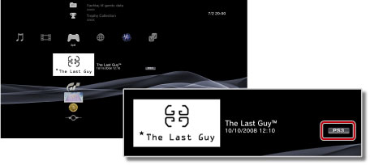

Spil > Afspilning af spil, der er downloadet fra PlayStation®Store > Afspilning af downloadede spil
Afspilning af downloadede spil
Du kan spille spil, som du har downloadet (mod betaling eller gratis) fra  (PlayStation®Store). Afspilningen af spillet varierer, afhængigt af spiltypen. Oplysninger om spiltypen vises ved siden af spilikonet.
(PlayStation®Store). Afspilningen af spillet varierer, afhængigt af spiltypen. Oplysninger om spiltypen vises ved siden af spilikonet.

Tip
Hvis du vil sortere spil efter type, skal du vælge et spilikon, trykke på  -tasten og derefter vælge [Sorteret efter] > [Format] i indstillingsmenuen.
-tasten og derefter vælge [Sorteret efter] > [Format] i indstillingsmenuen.
Afspilning af PlayStation®3 formateret software

PlayStation®3 Formateret Software, der er downloadet fra (PlayStation®Store), kan generelt afspilles på samme måde som, når du afspiller PlayStation®3 Formateret Software fra en disk. Yderligere oplysninger findes i denne vejledning under  (Spil) > [Afspilning af PlayStation®3 formateret software].
(Spil) > [Afspilning af PlayStation®3 formateret software].
Afspilning af PlayStation® formateret software
PlayStation® Formateret Software, der er downloadet fra (PlayStation®Store), kan generelt afspilles på samme måde som, når du afspiller PlayStation® Formateret Software fra en disk. Yderligere oplysninger findes i denne vejledning under (Spil) > [Afspilning af PlayStation®2-/PlayStation®-formateret software ].
Softwaremanualer
Du kan muligvis få vist softwarevejledninger til PlayStation® Formateret Software, som du har downloadet. Tryk på PS-tasten på den trådløse controller under et spil, og vælg [Software manuale] på den viste skærm.
Spil, der kræver diskskift
Noget PlayStation® Formateret Software, der downloades, kræver, at du skifter disks. Når du spiller sådanne spil på PS3™-systemet, udføres diskskiftet virtuelt. Tryk på PS-tasten på den trådløse controller, og vælg derefter [Skift diske] på den viste skærm, hvis du bliver bedt om at skifte disks. Følg vejledningen på skærmen for at udføre handlingen.
Afspilning af spil i formatet PC Engine
Yderligere oplysninger om afspilning af spil i formatet PC Engine findes i betjeningsvejledningen, som følger med spillet. Metoden til visning af betjeningsvejledningen kan variere afhængigt af spillet. Formatet PC Engine er muligvis ikke tilgængeligt afhængigt af land eller område.